第 6 章 阈值处理#
本章解决：怎么用一个（或一组）亮度门槛把像素分成两拨——高于门槛的怎么变、其余的怎么变。固定阈值交给
cv2.threshold()，五种处理类型随意选；明暗分布不均匀的图，交给cv2.adaptiveThreshold()按邻域逐点算阈值；不想手动挑阈值，Otsu 方法遍历所有候选值自动挑最优。阈值处理的直接产物是二值图，前景与背景就此分开。
运行环境约定
本章代码引用本目录根下的素材（picture1.jpg、picture12.jpg），路径写作相对路径。运行时工作目录需为 数字图像处理-python 根目录，否则 imread 返回 None。原书用 lena.bmp（例 6.2、6.4、6.6、6.8、6.10）、computer.jpg（例 6.11 计算器图）、tiffany.bmp（例 6.13 人像）演示，本章统一换成：picture1.jpg（1080×1920，整体偏亮）以灰度方式读入顶替 lena 与 tiffany，picture12.jpg（1522×1080 古钱币，整体偏暗）顶替 computer。例 6.1、6.3、6.5、6.7、6.9 的数组用 np.random.randint 随机生成，每次运行输出都不同，书中打印值只对应原书那一次运行；控制台打印的具体数值随图片不同而不同。另外，跟随代码 ipynb 里用的 cv_show 是未给出定义的辅助函数，运行 ipynb 前先补一句 def cv_show(name, img): cv2.imshow(name, img); cv2.waitKey()。
6.0 本章导图#
6.1 threshold 函数#
阈值处理（thresholding）是指剔除图像内像素值高于一定值或者低于一定值的像素点。例如设定阈值为 127，然后：
- 将图像内所有像素值大于 127 的像素点的值设为 255；
- 将图像内所有像素值小于或等于 127 的像素点的值设为 0。
这样得到一幅二值图像，前景与背景被有效分离——图 6.1 左边是灰度原图，右边是处理后的二值图，明亮的背景、浅色的服饰保留为白，深色的头发、轮廓线整体变黑。
OpenCV 提供两个函数实现阈值处理：cv2.threshold()（固定阈值）与 cv2.adaptiveThreshold()（自适应阈值）。先看前者，语法格式：
| 参数 / 返回值 | 含义 |
|---|---|
retval |
返回的阈值 |
dst |
阈值分割结果图像，与原始图像具有相同的大小、类型 |
src |
要进行阈值分割的图像，可以是多通道的，8 位或 32 位浮点型 |
thresh |
要设定的阈值 |
maxval |
当 type 为 THRESH_BINARY 或 THRESH_BINARY_INV 时需要设定的最大值 |
type |
阈值分割的类型，见表 6-1 |
两个容易忽略的细节，实测确认过：
maxval只在 BINARY / BINARY_INV 两种类型下生效。TRUNC、TOZERO、TOZERO_INV 传别的maxval没有任何效果——这三种类型的输出里根本不会出现 maxval。retval就是参数thresh的原样回传（如 127 会返回 127.0）。普通阈值处理不会"计算"阈值，只有叠加 Otsu / Triangle 标记时它才是自动求出的最优阈值（见 6.3 节）。
type 的可选值见表 6-1（枚举值为实测值）：
| 类型 | 值 | 处理规则（大于 thresh 的像素 / 其余像素） |
|---|---|---|
| cv2.THRESH_BINARY | 0 | 置为 maxval / 置为 0 |
| cv2.THRESH_BINARY_INV | 1 | 置为 0 / 置为 maxval |
| cv2.THRESH_TRUNC | 2 | 截断为 thresh / 保持不变 |
| cv2.THRESH_TOZERO_INV | 4 | 置为 0 / 保持不变 |
| cv2.THRESH_TOZERO | 3 | 保持不变 / 置为 0 |
| cv2.THRESH_MASK | 7 | 掩码标记，不是独立的处理类型（见下方拓展） |
| cv2.THRESH_OTSU | 8 | 标记，叠加后用 Otsu 算法自动求阈值（6.3 节） |
| cv2.THRESH_TRIANGLE | 16 | 标记，叠加后用三角法求阈值 |
这五条公式相对抽象，原书把它们画在同一张图里：最上面一行是原始像素值曲线和阈值水平线（虚线），下面五行依次是五种类型处理后的输出曲线。一眼能看出谁"砍头"、谁"截尾"、谁"黑白翻转"。
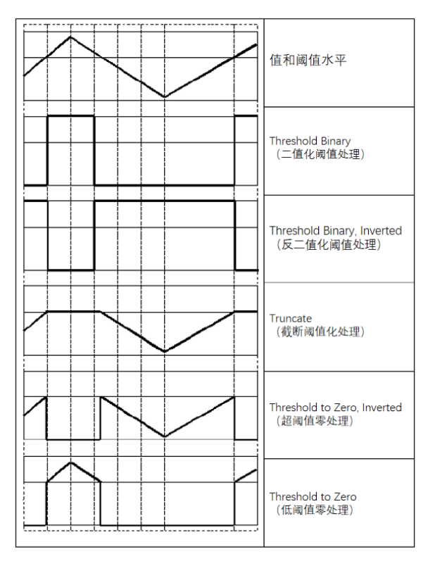
五种类型作用在同一个 2×4 数组上（阈值 127、maxval 255）的数值对照如下，每一列就是一个像素的"前 → 后"变化。这一对照表经过实际运行逐一核对，背不下来就回来查：
| 输入像素值 | 50 | 100 | 150 | 200 | 127 | 128 | 0 | 255 |
|---|---|---|---|---|---|---|---|---|
| BINARY | 0 | 0 | 255 | 255 | 0 | 255 | 0 | 255 |
| BINARY_INV | 255 | 255 | 0 | 0 | 255 | 0 | 255 | 0 |
| TRUNC | 50 | 100 | 127 | 127 | 127 | 127 | 0 | 127 |
| TOZERO_INV | 50 | 100 | 0 | 0 | 127 | 0 | 0 | 0 |
| TOZERO | 0 | 0 | 150 | 200 | 0 | 128 | 0 | 255 |
拓展：threshold 与掩模的关系
threshold 输出的 0/255 图天生就是掩模（mask）：255 的位置表示"选中（前景）"，0 的位置表示"排除（背景）"。第 3 章按位与配合掩模做区域处理，用的正是这种图——cv2.bitwise_and(前景图, img, mask=阈值结果) 就能把处理效果限制在选区内。
表 6-1 里的 THRESH_MASK（值 7）不是第六种处理规则。官方文档只给它一句"mask values"，没有公式。查源码可知它真正的作用：type & THRESH_MASK 把 THRESH_OTSU(8)、THRESH_TRIANGLE(16) 这些标志位从 type 里剥掉，只留下 0~4 的处理类型——这正是"掩码"在位运算里的含义：指定位保留、其余清零。实测（OpenCV 4.13.0）把 cv2.THRESH_MASK 当类型传入：8 位图（含彩色）输出全 0 图，float32 直接抛 Bad argument。别把它当可用类型。
拓展：彩色图也能做阈值处理
src 可以是多通道。对彩色图做阈值处理时，三个通道各自独立与阈值比较，输出仍是同尺寸多通道图。实测对 picture3.jpg（1110×736×3）做 TRUNC、阈值 155：B、G、R 三个通道里所有大于 155 的值都被截为 155，形状不变。但常规用法仍是先转灰度再阈值——得到单通道掩模，方便后续按位运算使用。
6.1.1 二值化阈值处理（cv2.THRESH_BINARY）#
二值化阈值处理（binary thresholding）会把原始图像处理为仅有两个值的二值图像，示意图如图 6.3：处理方式为
- 对于灰度值大于阈值 thresh 的像素点，将其灰度值设定为最大值；
- 对于灰度值小于或等于阈值 thresh 的像素点，将其灰度值设定为 0。
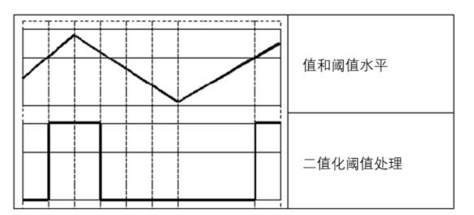
用表达式表示，目标值的产生规则为：
式中 thresh 是选定的特定阈值。在 8 位图像中最大值是 255，因此把阈值设定为 127 时：所有大于 127 的像素点被处理为 255，其余被处理为 0。后续说明都以 8 位图像为例，即像素值最大值为 255。
【例 6.1】使用函数 cv2.threshold() 对数组进行二值化阈值处理，观察处理结果。
# ===== 6.1.1 例 6.1：数组上的 BINARY 阈值处理 =====
import cv2
import numpy as np
img = np.random.randint(0, 256, size=[4, 5], dtype=np.uint8) # 4 行 5 列随机灰度数组
t, rst = cv2.threshold(img, 127, 255, cv2.THRESH_BINARY) # 阈值 127、最大值 255、二值化
print("img=\n", img) # 打印原始数组
print("t=", t) # 返回的阈值：127.0
print("rst=\n", rst) # 打印处理结果：只有 0 和 255
运行程序，结果如下所示（随机数组，每次运行结果不同，这是原书那一次的输出）：
img=
[[184 204 23 247 118]
[173 107 120 69 209]
[231 218 42 211 108]
[133 125 29 191 198]]
t= 127.0
rst=
[[255 255 0 255 0]
[255 0 0 0 255]
[255 255 0 255 0]
[255 0 0 255 255]]
逐列核对第一行：184 > 127 → 255，204 > 127 → 255，23 ≤ 127 → 0，247 > 127 → 255，118 ≤ 127 → 0，与 rst 第一行 [255 255 0 255 0] 完全对应。返回值 t 打印出来是 127.0（浮点数），就是传入的阈值原样带回。
【例 6.2】使用函数 cv2.threshold() 对图像进行二值化阈值处理。
# ===== 6.1.1 例 6.2：图像上的 BINARY 阈值处理 =====
import cv2
img = cv2.imread("picture1.jpg", 0) # 灰度读入（原书 lena.bmp）
t, rst = cv2.threshold(img, 127, 255, cv2.THRESH_BINARY)
cv2.imshow("img", img)
cv2.imshow("rst", rst)
cv2.waitKey()
cv2.destroyAllWindows()
运行程序，结果如图 6.4 所示，左图是原始图像，右图是二值化阈值处理结果：亮部（白色背景、浅色服饰）变白，暗部（头发、深色轮廓）变黑，全图只剩纯黑与纯白两个灰度级。
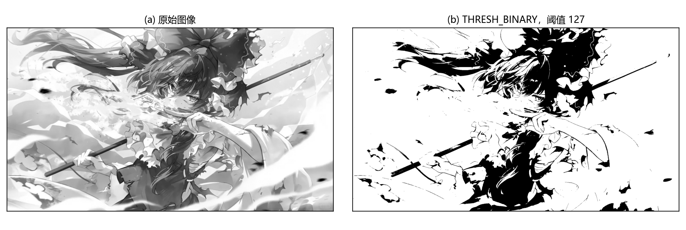
6.1.2 反二值化阈值处理（cv2.THRESH_BINARY_INV）#
反二值化阈值处理（inverted binary thresholding）的结果也是仅有两个值的二值图像，与二值化阈值处理的区别在于二者对像素值的处理方式正好相反：
- 对于灰度值大于阈值的像素点，将其值设定为 0；
- 对于灰度值小于或等于阈值的像素点，将其值设定为 255。
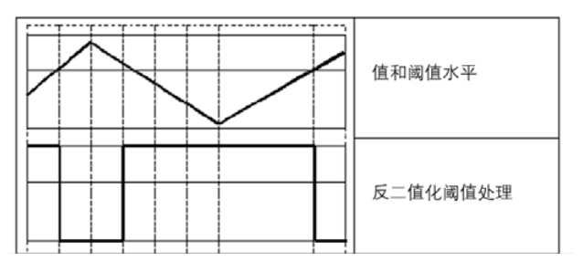
用表达式表示，其目标值的产生规则为：
式中 thresh 是选定的阈值。对照图 6.2 的曲线更容易记：BINARY 与 BINARY_INV 的输出曲线互为上下翻转。
【例 6.3】使用函数 cv2.threshold() 对数组进行反二值化阈值处理，观察处理结果。
# ===== 6.1.2 例 6.3：数组上的 BINARY_INV 阈值处理 =====
import cv2
import numpy as np
img = np.random.randint(0, 256, size=[4, 5], dtype=np.uint8) # 4 行 5 列随机灰度数组
t, rst = cv2.threshold(img, 127, 255, cv2.THRESH_BINARY_INV) # 类型换成 BINARY_INV
print("img=\n", img)
print("t=", t)
print("rst=\n", rst)
运行程序，结果如下所示（随机数组，每次运行结果不同）：
img=
[[ 56 64 150 48 41]
[108 165 112 213 110]
[122 244 10 213 46]
[247 30 90 0 26]]
t= 127.0
rst=
[[255 255 0 255 255]
[255 0 255 0 255]
[255 0 255 0 255]
[ 0 255 255 255 255]]
第一行核对：56、64、48、41 都小于 127 → 255；150 > 127 → 0。与 BINARY 的规则完全颠倒。
【例 6.4】使用函数 cv2.threshold() 对图像进行反二值化阈值处理。
# ===== 6.1.2 例 6.4：图像上的 BINARY_INV 阈值处理 =====
import cv2
img = cv2.imread("picture1.jpg", 0) # 灰度读入（原书 lena.bmp）
t, rst = cv2.threshold(img, 127, 255, cv2.THRESH_BINARY_INV)
cv2.imshow("img", img)
cv2.imshow("rst", rst)
cv2.waitKey()
cv2.destroyAllWindows()
运行程序，结果如图 6.6 所示：与图 6.4 的 BINARY 结果对照，黑白完全互换——亮部变黑、暗部变白，好比照片的"负片"。
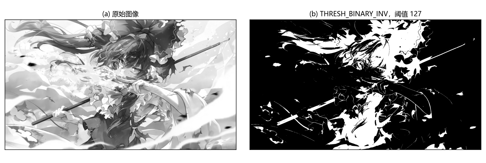
6.1.3 截断阈值化处理（cv2.THRESH_TRUNC）#
截断阈值化处理（truncate thresholding）会将图像中大于阈值的像素点的值设定为阈值，小于或等于该阈值的像素点的值保持不变。示意图如图 6.7：高于阈值水平线的波峰被"削平"，削到与阈值齐平，波谷原样保留。
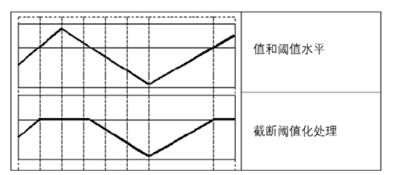
例如阈值选取为 127，则截断阈值化处理时：
- 对于像素值大于 127 的像素点，其像素值将被设定为 127；
- 对于像素值小于或等于 127 的像素点，其像素值将保持不变。
用表达式表示，其目标值的产生规则为：
原书笔误：TRUNC 的公式
原书表 6-1 的 THRESH_TRUNC 行与 6.1.3 节的公式都把"其他情况"写成了 0。这与它自己的正文矛盾——正文写的是"小于或等于该阈值的像素点的值保持不变"，例 6.5 的输出也证明 60、22、49 这些小于阈值的值原样保留。TRUNC 正确的规则是"其他情况取 src(x,y)"，上面已更正。另外原书多处把"保持不变"误写作"保持改变"，同属笔误。
注意：TRUNC 的结果不是二值图，输出里还有 thresh 和原始灰度两个层次；maxval 参数对它无效。
【例 6.5】使用函数 cv2.threshold() 对数组进行截断阈值化处理，观察处理结果。
# ===== 6.1.3 例 6.5：数组上的 TRUNC 阈值处理 =====
import cv2
import numpy as np
img = np.random.randint(0, 256, size=[4, 5], dtype=np.uint8) # 4 行 5 列随机灰度数组
t, rst = cv2.threshold(img, 127, 255, cv2.THRESH_TRUNC) # 类型为 TRUNC，maxval 无效
print("img=\n", img)
print("t=", t)
print("rst=\n", rst)
运行程序，结果如下所示（随机数组，每次运行结果不同）：
img=
[[190 60 146 22 22]
[253 49 63 180 113]
[ 27 64 148 44 7]
[ 11 100 249 47 239]]
t= 127.0
rst=
[[127 60 127 22 22]
[127 49 63 127 113]
[ 27 64 127 44 7]
[ 11 100 127 47 127]]
逐列核对第一行：190 → 127，60 保持 60，146 → 127，22 保持 22。所有大于 127 的值都"触顶"在 127，其余原样保留。
【例 6.6】使用函数 cv2.threshold() 对图像进行截断阈值化处理。
# ===== 6.1.3 例 6.6：图像上的 TRUNC 阈值处理 =====
import cv2
img = cv2.imread("picture1.jpg", 0) # 灰度读入（原书 lena.bmp）
t, rst = cv2.threshold(img, 127, 255, cv2.THRESH_TRUNC)
cv2.imshow("img", img)
cv2.imshow("rst", rst)
cv2.waitKey()
cv2.destroyAllWindows()
运行程序，结果如图 6.8 所示：右图亮部全部压成同一层灰（127），整体像蒙了一层灰纱——画面比原图"闷"，因为最亮的那批像素失去了层次。
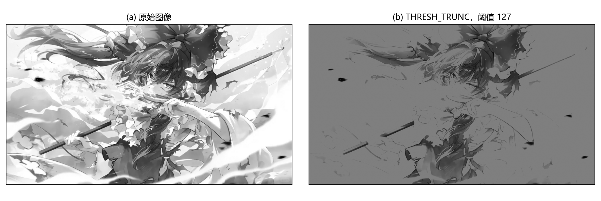
6.1.4 超阈值零处理（cv2.THRESH_TOZERO_INV）#
超阈值零处理（threshold to zero, inverted）会将图像中大于阈值的像素点的值处理为 0，小于或等于该阈值的像素点的值保持不变。工作原理如图 6.9：高出阈值水平线的部分直接"清零"，波形只在阈值以下保留。
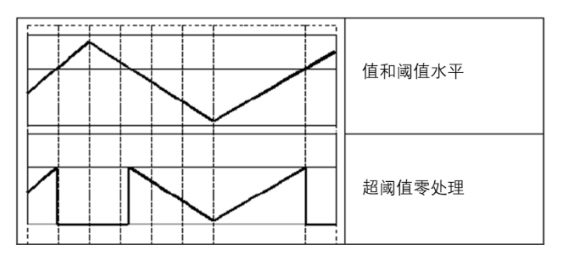
例如阈值选取为 127，则：
- 对于像素值大于 127 的像素点，其值将被设定为 0；
- 对于像素值小于或等于 127 的像素点，其值将保持不变。
用表达式表示，其目标值的产生规则为：
【例 6.7】使用函数 cv2.threshold() 对数组进行超阈值零处理，观察处理结果。
# ===== 6.1.4 例 6.7：数组上的 TOZERO_INV 阈值处理 =====
import cv2
import numpy as np
img = np.random.randint(0, 256, size=[4, 5], dtype=np.uint8) # 4 行 5 列随机灰度数组
t, rst = cv2.threshold(img, 127, 255, cv2.THRESH_TOZERO_INV) # 大于阈值置 0
print("img=\n", img)
print("t=", t)
print("rst=\n", rst)
运行程序，结果如下所示（随机数组，每次运行结果不同）：
img=
[[ 16 68 231 94 82]
[112 195 239 127 71]
[ 67 47 240 107 227]
[144 51 130 207 164]]
t= 127.0
rst=
[[ 16 68 0 94 82]
[112 0 0 127 71]
[ 67 47 0 107 0]
[ 0 51 0 0 0]]
注意第二行第 4 个值：127 不大于 127，所以原样保留——"大于"是严格大于，等于阈值的像素落在"其他情况"一侧。
【例 6.8】使用函数 cv2.threshold() 对图像进行超阈值零处理。
# ===== 6.1.4 例 6.8：图像上的 TOZERO_INV 阈值处理 =====
import cv2
img = cv2.imread("picture1.jpg", 0) # 灰度读入（原书 lena.bmp）
t, rst = cv2.threshold(img, 127, 255, cv2.THRESH_TOZERO_INV)
cv2.imshow("img", img)
cv2.imshow("rst", rst)
cv2.waitKey()
cv2.destroyAllWindows()
运行程序，结果如图 6.10 所示：亮部（大于 127）全部变黑，只留下暗部细节——效果类似图 6.6 反二值化的"暗部"，但保留的是原始灰度层次而非纯白。
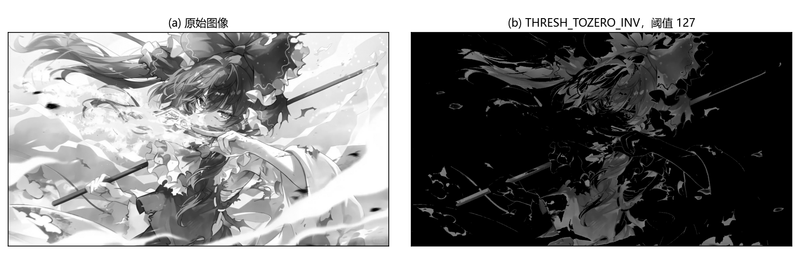
6.1.5 低阈值零处理（cv2.THRESH_TOZERO）#
低阈值零处理（threshold to zero）会将图像中小于或等于阈值的像素点的值处理为 0，大于阈值的像素点的值保持不变。示意图如图 6.11：与 TOZERO_INV 正好相反，这次清零的是阈值以下的波谷。
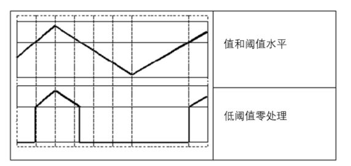
例如阈值选取为 127，则：
- 对于像素值大于 127 的像素点，其像素值将保持不变；
- 对于像素值小于或等于 127 的像素点，其像素值将被设定为 0。
用表达式表示，其目标值的产生规则为：
【例 6.9】使用函数 cv2.threshold() 对数组进行低阈值零处理，观察处理结果。
# ===== 6.1.5 例 6.9：数组上的 TOZERO 阈值处理 =====
import cv2
import numpy as np
img = np.random.randint(0, 256, size=[4, 5], dtype=np.uint8) # 4 行 5 列随机灰度数组
t, rst = cv2.threshold(img, 127, 255, cv2.THRESH_TOZERO) # 小于等于阈值置 0
print("img=\n", img)
print("t=", t)
print("rst=\n", rst)
运行程序，结果如下所示（随机数组，每次运行结果不同）：
img=
[[ 73 57 135 10 8]
[127 162 110 217 54]
[203 99 205 97 127]
[ 14 100 83 226 71]]
t= 127.0
rst=
[[ 0 0 135 0 0]
[ 0 162 0 217 0]
[203 0 205 0 0]
[ 0 0 0 226 0]]
第二行第 1 个值 127、第三行第 5 个值 127 都变成了 0——再次印证"等于阈值"归入被清零的一侧。保留下来的 135、162、217 等值原封不动，这是 TOZERO 与 BINARY 的本质区别：前者保留灰度层次，后者只有 0 和 maxval。
【例 6.10】使用函数 cv2.threshold() 对图像进行低阈值零处理。
# ===== 6.1.5 例 6.10：图像上的 TOZERO 阈值处理 =====
import cv2
img = cv2.imread("picture1.jpg", 0) # 灰度读入（原书 lena.bmp）
t, rst = cv2.threshold(img, 127, 255, cv2.THRESH_TOZERO)
cv2.imshow("img", img)
cv2.imshow("rst", rst)
cv2.waitKey()
cv2.destroyAllWindows()
运行程序，结果如图 6.12 所示：暗部整体变黑，亮部保留原有灰度——相当于把背景"压黑"、前景"浮出来"，常用于突出高亮区域。
6.2 自适应阈值处理#
对于色彩均衡的图像，直接使用一个阈值就能完成阈值化处理。但有时图像的色彩是不均衡的，此时只使用一个阈值，就无法得到清晰有效的阈值分割结果图像。
改进的思路：用变化的阈值完成阈值处理，这种技术称为自适应阈值处理（adaptive thresholding）。处理时，逐个像素计算其周围临近区域的加权平均值来获得该像素自己的阈值，再用这个阈值处理当前像素。与普通阈值处理相比，自适应阈值处理能够更好地处理明暗差异较大的图像。
OpenCV 提供函数 cv2.adaptiveThreshold() 实现自适应阈值处理，语法格式：
| 参数 | 含义 |
|---|---|
dst |
自适应阈值处理结果 |
src |
要处理的原始图像，必须是 8 位单通道图像 |
maxValue |
最大值 |
adaptiveMethod |
自适应方法：MEAN_C 或 GAUSSIAN_C |
thresholdType |
阈值处理方式，必须是 THRESH_BINARY 或 THRESH_BINARY_INV 之一 |
blockSize |
块大小：计算一个像素的阈值时所使用的邻域尺寸，通常为 3、5、7 等奇数 |
C |
常量 |
参数 adaptiveMethod 决定自适应阈值的计算方法，有两种。两种方法都是逐个像素地计算自适应阈值，自适应阈值等于每个像素由参数 blockSize 所指定邻域的加权平均值减去常量 C，区别只在"加权"的方式：
cv2.ADAPTIVE_THRESH_MEAN_C：邻域内所有像素点的权重一致（就是求平均）；cv2.ADAPTIVE_THRESH_GAUSSIAN_C：权重与各像素点到中心点的距离有关，通过高斯方程（Gaussian）得到各点权重——离中心越近权重越大。
【例 6.11】对一幅图像分别使用二值化阈值函数 cv2.threshold() 和自适应阈值函数 cv2.adaptiveThreshold() 进行处理，观察处理结果的差异。
# ===== 6.2 例 6.11：全局阈值 vs 自适应阈值 =====
import cv2
img = cv2.imread("picture12.jpg", 0) # 灰度读入（原书 computer.jpg 计算器图）
t1, thd = cv2.threshold(img, 127, 255, cv2.THRESH_BINARY) # 全局固定阈值 127
athdMEAN = cv2.adaptiveThreshold(img, 255, cv2.ADAPTIVE_THRESH_MEAN_C,
cv2.THRESH_BINARY, 5, 3) # 邻域均值法，块 5，C=3
athdGAUS = cv2.adaptiveThreshold(img, 255, cv2.ADAPTIVE_THRESH_GAUSSIAN_C,
cv2.THRESH_BINARY, 5, 3) # 高斯加权法，块 5，C=3
cv2.imshow("img", img)
cv2.imshow("thd", thd)
cv2.imshow("athdMEAN", athdMEAN)
cv2.imshow("athdGAUS", athdGAUS)
cv2.waitKey()
cv2.destroyAllWindows()
运行程序，结果如图 6.13 所示：(a) 原始图像；(b) 全局二值化结果；© MEAN_C 自适应结果；(d) GAUSSIAN_C 自适应结果。
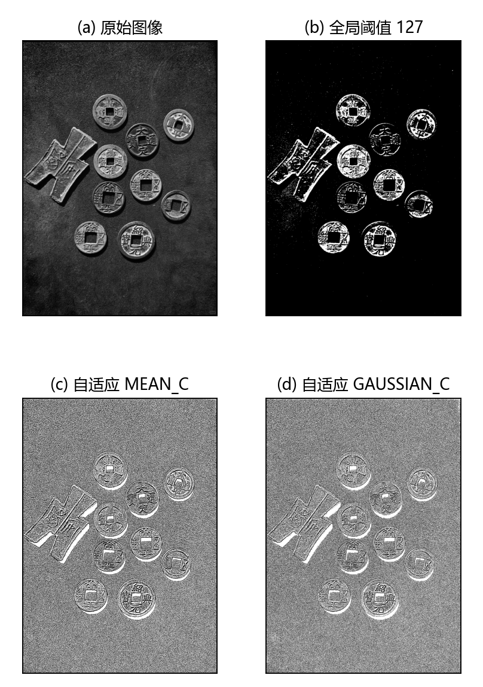
对比非常直观。原书的计算器图左侧被阴影遮盖，全局 127 后左半部分几乎全黑，按键信息大量丢失。换成素材 picture12.jpg（暗背景古钱币，平均灰度约 57）后同样如此：全局 127 二值化后白像素只占约 7%，币面图案几乎全黑；而两种自适应方法都把钱币的纹理完整勾了出来，说明自适应阈值处理保留了更多的细节信息。在一些极端情况下，普通阈值处理会丢失大量信息，而自适应阈值处理可以得到效果更好的二值图像。
拓展：自适应阈值的等价手算
两种方法的阈值都可以自己算出来，结论经过逐像素验证（OpenCV 4.13.0）：
- MEAN_C：阈值 = blockSize×blockSize 邻域的均值 − C，边界用复制填充（BORDER_REPLICATE）。等价写法：
mean = cv2.boxFilter(src, -1, (blockSize, blockSize), normalize=True, borderType=cv2.BORDER_REPLICATE)，再按src > mean − C置 maxval。 - GAUSSIAN_C：阈值 = 同尺寸高斯加权平均 − C。等价写法：
mean = cv2.GaussianBlur(src, (blockSize, blockSize), 0, 0, borderType=cv2.BORDER_REPLICATE)（σ 由核大小自动推算）。
据此能直接推参数的影响方向：C 越大，阈值（均值 − C）越低，THRESH_BINARY 下被判白的像素越多；blockSize 越大，邻域越大，每个阈值"看得越远"，结果线条越粗、整体越平滑。
拓展：adaptiveThreshold 的参数卡得很严
三条限制都实测验证过（cv2.error）：
src必须 8 位单通道：彩色图、float32 图直接报错，先cv2.cvtColor(img, cv2.COLOR_BGR2GRAY)；thresholdType只能是 THRESH_BINARY 或 THRESH_BINARY_INV，传 THRESH_TRUNC 报错——因为逐点阈值下"截断""归零"这些语义无从谈起；blockSize必须是奇数，传 10 报错，与卷积核"有中心"是同一个道理。
6.3 Otsu 处理#
使用函数 cv2.threshold() 进行阈值处理时，需要自定义一个阈值。通常情况下处理的图像都是色彩均衡的，这时直接将阈值设为 127 是比较合适的。
但有时图像灰度级的分布是不均衡的，此时把阈值设置为 127，阈值处理的结果就是失败的。例如有一幅图像 img，里面的像素值为：
[[123 123 123 123 123]
[123 123 123 123 123]
[123 123 126 126 126]
[123 123 126 126 126]
[123 123 126 126 126]]
此时如果仍然以 127 作为阈值，那么阈值处理结果是：
全图变成纯黑——127 这个"标准答案"在一张只有 123 和 126 两种灰度的图上毫无区分度。观察可知，对 img 以阈值 125 进行分割，可以得到较好的结果：
但实际处理的图像往往很复杂，不可能像上面这样一眼看出最合适的阈值，一个个尝试工作量巨大。
Otsu 方法（Otsu method，也称大津法、最大类间方差法）能够根据当前图像给出最佳的类间分割阈值：遍历所有可能阈值，找到最佳的阈值。在 OpenCV 中，给 cv2.threshold() 的参数 type 多传递一个参数 cv2.THRESH_OTSU 即可实现：
与普通阈值分割的不同之处在于：
- 参数 type 增加了一个参数值
cv2.THRESH_OTSU（用加号叠加在原类型上）； - 设定的阈值为 0（传什么都会被忽略，写 0 是约定俗成）；
- 返回值 t 是 Otsu 方法计算得到并使用的最优阈值。
需要注意，如果采用普通的阈值分割，返回的阈值就是设定的阈值，例如 cv2.threshold(img, 127, 255, cv2.THRESH_BINARY) 返回的 t 就是 127。
【例 6.12】测试 Otsu 阈值处理的实现。
# ===== 6.3 例 6.12：123/126 图上对比普通阈值与 Otsu =====
import cv2
import numpy as np
img = np.zeros((5, 5), dtype=np.uint8)
img[0:6, 0:6] = 123 # 越界切片：5×5 数组上等效 img[0:5, 0:5]，全图置 123
img[2:6, 2:6] = 126 # 越界切片：等效 img[2:5, 2:5]，右下 3×3 置 126
print("img=\n", img)
t1, thd = cv2.threshold(img, 127, 255, cv2.THRESH_BINARY) # 普通阈值 127
print("thd=\n", thd)
t2, otsu = cv2.threshold(img, 0, 255, cv2.THRESH_BINARY + cv2.THRESH_OTSU) # Otsu 自动阈值
print("otsu=\n", otsu)
print("t2=", t2) # Otsu 找到的最优阈值
运行程序，结果如下所示：
img=
[[123 123 123 123 123]
[123 123 123 123 123]
[123 123 126 126 126]
[123 123 126 126 126]
[123 123 126 126 126]]
thd=
[[0 0 0 0 0]
[0 0 0 0 0]
[0 0 0 0 0]
[0 0 0 0 0]
[0 0 0 0 0]]
otsu=
[[ 0 0 0 0 0]
[ 0 0 0 0 0]
[ 0 0 255 255 255]
[ 0 0 255 255 255]
[ 0 0 255 255 255]]
普通 127 阈值全军覆没（全 0）；Otsu 自动找出最优阈值并分割成功，右下 3×3 的 126 变为 255，其余保持 0，与前面"以 125 分割"的手工结果一模一样。
拓展：Otsu 在算什么——类间方差
Otsu 遍历 0~255 每个候选阈值 i，把 \([0, i]\) 的像素划为类 0、\([i+1, 255]\) 的划为类 1，计算两类的类间方差（between-class variance）：
其中 \(w_0\)、\(w_1\) 是两类像素的占比，\(\mu_0\)、\(\mu_1\) 是两类的平均灰度。\(\sigma_B^2\) 最大，意味着这个阈值把两个"灰度集团"分得最开——这就是"最佳类间分割阈值"的数学含义。
手算例 6.12 的 img（16 个 123、9 个 126，全图均值 124.08）：取 i=123 时 \(w_0 = 0.64\)、\(w_1 = 0.36\)、\(\mu_0 = 123\)、\(\mu_1 = 126\)，\(\sigma_B^2 = 0.64 \times 0.36 \times 3^2 = 2.0736\)；i=124、125 时没有新像素划入，方差同为 2.0736。OpenCV 在并列时取第一个最大值位置（严格大于比较），所以实测返回 t2 = 123.0，与手算一致。实测还确认：传入的 thresh 参数被完全忽略——传 200 也照样返回 123.0。
Otsu 有硬性限制：只支持 8 位单通道图，对彩色图或 float32 图叠加 THRESH_OTSU 会直接报错（实测）。
【例 6.13】分别对一幅图像进行普通的二值化阈值处理和 Otsu 阈值处理，观察处理结果的差异。
# ===== 6.3 例 6.13：真实图上的 127 阈值 vs Otsu 阈值 =====
import cv2
img = cv2.imread("picture1.jpg", 0) # 灰度读入（原书 tiffany.bmp 亮调人像）
t1, thd = cv2.threshold(img, 127, 255, cv2.THRESH_BINARY) # 普通二值化，127
t2, otsu = cv2.threshold(img, 0, 255, cv2.THRESH_BINARY + cv2.THRESH_OTSU) # Otsu 自动阈值
cv2.imshow("img", img)
cv2.imshow("thd", thd)
cv2.imshow("otsu", otsu)
cv2.waitKey()
cv2.destroyAllWindows()
运行程序，结果如图 6.14 所示：(a) 原始图像；(b) 以 127 为阈值的普通二值化结果；© Otsu 处理结果。
本例中原始图像整体的亮度较高，即有较多的像素值大于 127，所以：
- 使用 127 作为阈值进行普通二值化时，得到了大量的白色区域（实测 picture1.jpg：白像素约占 80%），浅色背景与人物服饰的层次糊成一片白；
- 使用 Otsu 方法时，通过计算采用最优阈值（实测为 160），大片中灰的云雾背景被压回黑侧，人物轮廓重新分明，得到了较好的处理结果。
拓展：THRESH_TRIANGLE——单峰直方图的另一种自动阈值
表 6-1 里还有一个标记 cv2.THRESH_TRIANGLE（值 16）：三角法（Triangle method）。它对直方图找最高峰，用峰点与直方图远端（离峰最远的那个端点）连线，取直方图上离这条线距离最大的灰度级作为阈值。Otsu 适合直方图有两个峰（前景、背景各自成峰）的图，三角法则适合单峰直方图的图。用法与 Otsu 完全一致：
实测例 6.12 的 123/126 图，三角法返回 125.0（恰好是原书手工挑选的那个值），同样只支持 8 位单通道图。
最后把五种类型放到同一张图上横向对比，再用直方图看清各路阈值到底切在哪里。对 picture1.jpg 依次做五种处理（阈值 127、maxval 255），结果如图 6.30：BINARY 与 BINARY_INV 黑白互换，TRUNC 把亮部统一压到 127 这一层灰，TOZERO_INV 只留暗部、TOZERO 只留亮部——与 6.1 节的曲线示意图一一对应。
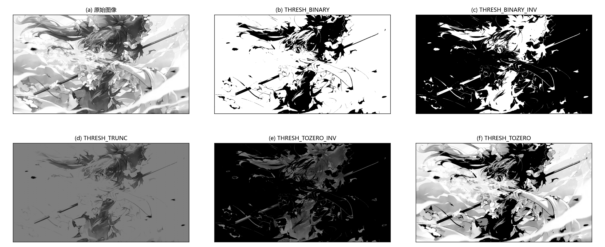
图 6.31 是 picture1.jpg 的灰度直方图，三条阈值线画在同一坐标系里：直方图重心明显偏右、230 以后陡然隆起，这是一张"整体偏亮"的图。固定阈值 127 切在主峰左侧，把约 80% 的像素划成白色；Otsu 找到的 160（红线）往右挪了一截，把大片中灰的云雾背景压回黑侧；Triangle 找到的 236 几乎顶到直方图右端（分割后白像素约 29%），它面向单峰直方图，把阈值取在峰值与远端连线的最远点，本例中留下的才是真正的高光区。同一张图，三种阈值策略给出的答案可能差得很远——"阈值怎么选"不是玄学，看直方图形状就能估出个八九不离十。
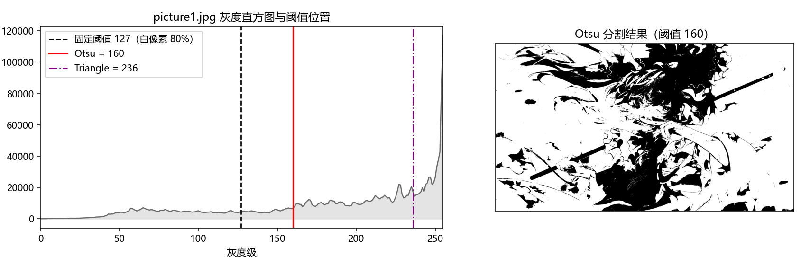
坑与陷阱#
8 个容易踩的坑
- "大于阈值"是严格大于：等于阈值的像素永远落在"其他情况"一侧。BINARY@127 时，值为 127 的像素变 0（实测
[126,127,128] → [0,0,255]）。想让 127 算白，阈值就得写 126 或 126.5。 - 原书 TRUNC 公式是错的：原书表 6-1 与 6.1.3 节把 TRUNC"其他情况"写成 0，实际是保持不变（
src(x,y)）。TRUNC 也不会输出二值图，它的输出里还有 thresh 层和原始灰度层。 - maxval 只对 BINARY / BINARY_INV 生效：TRUNC、TOZERO、TOZERO_INV 传任意 maxval 都无效果（实测 maxval=99 输出不变）。给这三种类型传 maxval 属于无效参数。
- adaptiveThreshold 的三道门槛：src 必须 8 位单通道（彩色图先
cvtColor转 GRAY）；thresholdType 只能是 BINARY / BINARY_INV；blockSize 必须是奇数（传偶数直接 cv2.error）。Otsu 同样只支持 8 位单通道，彩色图、float32 图叠加 THRESH_OTSU 都报错。 - 普通阈值的 retval 不是"算出来的"：不加 OTSU/TRIANGLE 标记时，retval 就是传入 thresh 的原样回传（实测设 137 返回 137.0）。只有叠加标记后，它才是自动求得的最优阈值——判断返回值有没有意义，先看 type 里有没有标记。
- OTSU 模式下传入的 thresh 被忽略：
cv2.threshold(img, 200, 255, cv2.THRESH_BINARY + cv2.THRESH_OTSU)照样返回最优阈值（实测 123.0），所以"阈值写 0"只是惯例，不是功能开关。 - NumPy 越界切片静默截断：例 6.12 的
img[0:6, 0:6]作用在 5×5 数组上不报错，等效img[0:5, 0:5]。这在 NumPy 里无害，但会掩盖"数组尺寸与代码不符"的问题，写切片前先确认shape。 - 随机数组例题的输出对不上书：例 6.1~6.9 用
np.random.randint生成数组，每次运行结果都不同。对照书上输出逐位核对是白费劲——拿固定小数组（见 6.1 节的对照表）验证规则才可靠。
速览#
- 阈值处理按阈值把像素分成两拨，直接产物是二值图，实现前景与背景分离；OpenCV 提供
cv2.threshold()与cv2.adaptiveThreshold()。 retval, dst = cv2.threshold(src, thresh, maxval, type)：retval 返回阈值，dst 与原图同尺寸同类型；src 可以是多通道 8 位或 32 位浮点图。- 五种类型一句话：BINARY 大于置 maxval；BINARY_INV 大于置 0；TRUNC 大于截为 thresh；TOZERO_INV 大于置 0 其余不动；TOZERO 小于等于置 0 其余不动。都基于严格大于。
- maxval 只在 BINARY / BINARY_INV 生效；TRUNC 输出不是二值图（含 thresh 层与原始灰度层）。
- 普通类型的 retval 就是设定的 thresh；叠加 THRESH_OTSU / THRESH_TRIANGLE 后 thresh 参数被忽略，retval 返回自动求得的最优阈值（此时约定把 thresh 写 0）。
- 自适应阈值逐像素计算：阈值 = blockSize 邻域加权平均 − C；MEAN_C 等权平均，GAUSSIAN_C 高斯加权（近处权重大）。C 越大，BINARY 结果白像素越多。
- adaptiveThreshold 限制：8 位单通道、thresholdType 只能 BINARY/BINARY_INV、blockSize 必须奇数；明暗差异大的图上远好于全局固定阈值。
- Otsu 遍历 0~255 全部候选阈值，取类间方差 \( \sigma_B^2 = w_0 w_1 (\mu_0 - \mu_1)^2 \) 最大者为最优阈值；只支持 8 位单通道。
- THRESH_TRIANGLE 是单峰直方图专用的另一种自动阈值标记，用法与 OTSU 相同（加号叠加）。
- THRESH_MASK（值 7）不是处理类型，是源码里剥离 OTSU/TRIANGLE 标志位用的位掩码；当类型传入时 8 位图输出全 0，float 图报错。
术语速查#
| 英文 / 函数 | 中文 | 一句话 |
|---|---|---|
| thresholding | 阈值处理 | 按阈值把像素分成两拨，剔除高于或低于一定值的像素 |
| binarization | 二值化 | 把图像处理成只有 0 和 255（或 0/1）两个值 |
| threshold | 阈值 | 分界值，"大于它"与"小于等于它"走不同分支 |
| maxval | 最大值 | BINARY / BINARY_INV 下"大于阈值"一侧被赋的值 |
| retval | 返回的阈值 | 普通类型原样回传设定值；Otsu/Triangle 下是最优阈值 |
| dst | 目标图像 | 处理结果，与原图同大小、同类型 |
| binary thresholding | 二值化阈值处理 | 大于阈值置 maxval，其余置 0 |
| inverted | 反转的 | BINARY_INV 与 BINARY 黑白互换；TOZERO_INV 与 TOZERO 相反 |
| truncate | 截断 | 大于阈值的值一律"压"到阈值本身，其余不变 |
| threshold to zero | 归零处理 | 把某一侧像素置 0，另一侧保留原始灰度 |
| adaptive thresholding | 自适应阈值处理 | 每个像素用其邻域信息计算自己的阈值 |
| neighborhood | 邻域 | 计算某像素阈值时参考的周围区域，blockSize×blockSize |
| weighted average | 加权平均 | 邻域像素按权重求平均；MEAN 等权，GAUSSIAN 距离加权 |
| blockSize | 块大小 | 邻域尺寸，奇数（3、5、7 等） |
| C | 常量 | 从加权平均里减去的值，调节白像素比例 |
| mask | 掩模 | 0/255 选区图；threshold 输出天然可用作掩模 |
| Otsu method | 大津法 | 遍历候选阈值、取类间方差最大者；又称最大类间方差法 |
| between-class variance | 类间方差 | 两类占比之积乘以两类均值差的平方，Otsu 的优化目标 |
| Triangle method | 三角法 | 单峰直方图的自动阈值，峰值与远端连线的最远点 |
| histogram | 直方图 | 各灰度级出现次数的统计，Otsu/Triangle 的输入 |
| foreground / background | 前景 / 背景 | 阈值分割的两部分：大于阈值一侧 / 其余 |
| grayscale | 灰度 | 阈值处理的主要对象，8 位单通道图 |